가스기사 (2003-08-10 기출문제)
1과목: 가스유체역학
1. 다음 용어에 대한 정의가 잘못 짝지어진 것은?
- 이상유체 : 점성이 없다고 가정한 비압축성 유체
- 뉴톤유체 : 전단응력이 속도구배에 비례하는 유체
- 표면장력 : 액체 표면상에서 작용하는 수축력 혹은 장력
- 동점성계수 : 절대점도와 유체압력의 비
(정답률: 75%)

2. 내경이 5㎝ 인 파이프속에 유속이 3m/sec 이고 동점도가 2Stokes 인 용액이 흐를 때 레이놀즈수는?
- 333
- 750
- 1000
- 3000
(정답률: 60%)
3. 지름이 20[㎜]인 관내부를 유체(물)가 층류로 흐를 수 있는 최대 평균 속도[m/sec]는? (단, 물의 μ = 1.173 x 10-4[kgf-s/m2]이고, 임계 NRe = 2,320 이다.)
- 133.4m/s
- 13.34m/s
- 1.334m/s
- 0.1334m/s
(정답률: 알수없음)
4. 다음에서 베르누이 방정식
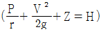
이 적용되는 조건으로 짝지어진 것은?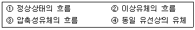
- ①, ②, ④
- ②, ④
- ①, ③
- ②, ③, ④
(정답률: 72%)
5. 안지름 40㎝ 인 관속을 동점도 4 stokes 인 유체가 15㎝/sec 의 속도로 흐른다. 이 때 흐름의 종류는?
- 층류
- 난류
- 플러그 흐름
- 전이 영역
(정답률: 알수없음)
6. 압축성 유체의 등엔트로피 유동에 대한 임계 압력비는?
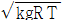
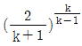
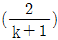
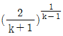
(정답률: 34%)
7. 초음속 유동에서 아음속유동으로의 감속 시 일어나는 수직충격파를 통한 변화 중 감소하는 것은?
- 정압
- 정체압력
- 정적온도
- 밀도
(정답률: 알수없음)
8. 밀도가 892㎏/m3 인 원유를 그림과 같이 A 관을 통하여 1.388 x 10-3 m3/s 로 들어가서 B 관으로 분할되어 나갈 때 관 B 에서 유속은? (단, 관 A 단면적은 2.165 x 10-3 m2 이고, 관 B 단면적은 1.314 x 10-3 m2 이다.)
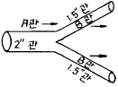
- 0.641 m/s
- 1.036 m/s
- 0.619 m/s
- 0.528 m/s
(정답률: 알수없음)
9. 내경이 20㎝에서 10㎝로 돌연 축소되는 관에 물이 체적유량(Q) 0.04m3/s로 흐를 때 돌연축소관에 의한 손실수두(H)를 구하면? (단, 저항계수 K = 0.62)
- 0.82m
- 0.72m
- 0.63m
- 0.42m
(정답률: 알수없음)
10. 교반기에서 사용되는 임펠러 중 축방향 흐름(axial flow)을 유발시키는 것은?
- 프로펠러(propeller)
- 원심베인(Vane)
- 패들(paddle)
- 터빈(Turbine)
(정답률: 10%)
11. 국제단위(SI 단위)에서 기본단위 간의 관계가 옳은 것은?
- 1N = 9.8 ㎏ㆍm/s2
- 1J = 9.8 ㎏ㆍm2/s2
- 1W = 1 ㎏ㆍm2/s3
- 1㎩ = 1⑤ ㎏/mㆍs2
(정답률: 75%)
12. 압축성 유체의 흐름 과정 중 등엔트로피 과정이란?
- 가역단열 과정이다.
- 가역등온 과정이다.
- 마찰이 있는 단열과정이다.
- 마찰이 없는 비가역 과정이다.
(정답률: 알수없음)
13. 25℃ 인 공기 중에서의 음속은? (단, k = 1.4이다.)
- 336m/s
- 340m/s
- 346m/s
- 350m/s
(정답률: 19%)
14. ２단 압축 시 압축일을 가장 적게 하는 중간 압력은?
- log P1ㆍP2
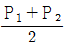
- ln P2/P1
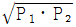
(정답률: 29%)
15. 온도 27℃ 의 이산화탄소 3kg 이 체적 0.30m3 의 용기에 가득 차 있을 때 가스의 압력(kgf/cm2)은? (단, 가스충전상수는 0.3 이다.)
- 270 kgf /cm2
- 5.79 kgf /cm2
- 100 kgf /cm2
- 24.3 kgf /cm2
(정답률: 알수없음)
16. 표준대기(standard atmosphere)상태란 무엇을 말하는가?
- 등온 대기와 폴리트로픽 대기의 조합이다.
- 등온 대기와 단열 대기의 조합이다.
- 단열 대기와 폴리트로픽 대기의 조합이다.
- 등엔트로피 대기와 단열 대기의 조합이다.
(정답률: 40%)
17. 뉴톤유체의 점도는 온도에 따라 증가하는데, 그 근사적 관계는? (단, μ 는 절대온도 K에서의 점도, μo 는 0℃에서의 점도, n 은 상수이다.)
- μ /μo = (T/273)n-1
- μ /μo = (T/273)n
- μ /μo = (T/273)n+1
- μ /μo = (273 + T)n
(정답률: 알수없음)
18. 수평관 속에 유체가 정상적으로 흐를 때 마찰손실은?
- 유속의 제곱에 비례해서 변한다.
- 원관의 길이에 반비례해서 변한다.
- 압력변화에 반비례해서 변한다.
- 원관 내경의 제곱에 반비례해서 변한다.
(정답률: 55%)
19. 다단압축을 실시하는 목적이 아닌 것은?
- 소요 일량의 증가
- 이용효율 증가
- 양호한 힘의 평형
- 가스 온도상승 방지
(정답률: 알수없음)
20. 원심 송풍기에 속하지 않는 것은?
- 다익 송풍기
- 레이디얼 송풍기
- 터보 송풍기
- 프로펠러 송풍기
(정답률: 55%)
2과목: 연소공학
21. 다음중 유동층 연소의 잇점이 아닌 것은?
- 화염층이 작아진다.
- 크링커 장해를 경감할 수 있다.
- 질소 산화물의 발생량을 크게 얻을 수 있다.
- 화격자단위 면적당의 열부하를 크게 얻을 수 있다.
(정답률: 34%)
22. 가연성기체를 공기와 같은 지연성기체 중에 분출시켜 연소시키므로 불완전 연소에 의한 그을음을 형성하는 기체연소 형태를 무엇이라고 하는가?
- 혼합연소(混合燃燒)
- 예혼연소(預混燃燒)
- 혼기연소(混氣燃燒)
- 확산연소(擴散燃燒)
(정답률: 60%)
23. 다음 층류연소속도에 관한 설명중 잘못된 것은?
- 층류연소속도는 압력에 따라 결정된다.
- 층류연소속도는 표면적에 따라 결정된다.
- 층류연소속도는 연료의 종류에 따라 결정된다.
- 층류연소속도는 가스의 흐름상태에는 무관하다.
(정답률: 29%)
24. 메탄가스 1㎏을 완전 연소시키는 데에 소요되는 공기량은 최소한 몇 Nm3인가? (단, 표준상태임)
- 9.6
- 10.9
- 11.6
- 13.3
(정답률: 28%)
25. 어떤 연도가스의 조성이 아래와 같다면 과잉공기의 백분율은 얼마인가? (단, 공기중 질소와 산소의 부피비는 79 : 21이다.)
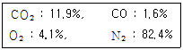
- 17.7%
- 21.9%
- 33.5%
- 46.0%
(정답률: 34%)
26. 프로판을 연소할 때 이론단열불꽃 온도가 가장 높은 것은 다음 중 어느 것인가?
- 20% 과잉공기로 연소하였다.
- 50% 과잉공기로 연소하였다.
- 이론량의 공기로 연소하였다.
- 이론량의 순수산소로 연소하였다.
(정답률: 50%)
27. 다음의 연료 중 과잉 공기 계수가 가장 작은 것은?
- 역청탄
- 코우크스
- 미분탄
- 갈탄
(정답률: 47%)
28. 카르노 냉동사이클에서 냉동기의 성적계수(COP)를 나타낸 것 중 옳은 것은? (단, TA : 냉동유지온도, TB : 열 배출온도)
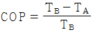
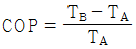
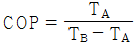
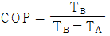
(정답률: 알수없음)
29. 체적 300mL의 탱크 속에 습증기 58㎏이 들어있다. 온도 350℃ 일때 증기의 건도는 얼마인가? (단, 350℃ 온도 기준 포화 증기표에서 V'= 1.7468 × 10-3 m3/㎏, V"= 8.811 × 10-3 m3/㎏ 이다.)
- 0.485
- 0.585
- 0.693
- 0.792
(정답률: 28%)
30. 다음의 T-S선도는 표준냉동사이클을 나타낸 것이다. 3 → 4의 과정은 무엇인가?
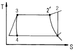
- 단열압축 과정
- 등압 과정
- 등온 과정
- 등엔탈피 과정
(정답률: 0%)
31. N2와 O2의 가스정수는 각각 30.26kgfㆍm/kgㆍK, 26.49kgfㆍm/kgㆍK 이다. N2가 70%인 N2와 O2의 혼합가스의 가스정수는 얼마인가?
- 10.23
- 17.56
- 23.95
- 29.13
(정답률: 알수없음)
32. 압력 0.2MPa, 온도 333K의 공기 2kg이 이상적인 폴리트로픽 과정으로 압축되어 압력 2MPa, 온도 523K로 변화하였을때 이 과정 동안의 일량은 몇 kJ 인가?
- -447
- -547
- -647
- -667
(정답률: 알수없음)
33. 연료의 연소시 산화제로 공기를 도입한다. 이 때의 설명으로 옳지 않은 것은?
- 공기비란 실제로 공급한 공기량과 이론 공기량과의 비이다.
- 과잉 공기란 연소시 단위연료당의 공급공기량을 말한다.
- 필요한 공기량의 최소량은 화학 반응식으로 부터 이론적으로 구할 수 있다.
- 공기 과잉률이란 과잉 공기량과 이론 공기량과의 비를 백분율로 한 것이다.
(정답률: 알수없음)
34. 1㎏의 물이 1기압에서 정압과정으로 0℃ 로부터 100℃로 되었다. 평균 열용량 Cp = 1㎉/㎏ㆍK 이면 엔트로피 변화량은 몇 ㎉/K 인가?
- 0.133
- 0.226
- 0.312
- 0.427
(정답률: 20%)
35. Van der waals식 (P+a/V2)(V-b) = RT에서 각 항을 설명한 것 중 틀린 것은?
- a와 b는 특정 기체 특유의 성질이다.
- 상수 a,b는 PV도표에서 임계점에서의 기울기와 곡율을 이용해서 구한다.
- b는 분자의 크기가 이상기체의 부피보다 더 큰 부피로 만들려고 보정하는 것이다.
- a/V2항은 분자들 사이의 인력의 작용이 이상기체에 의해서 발휘될 압력보다 크게하려고 더 해준다.
(정답률: 28%)
36. 다음 그림은 적화식 연소에 의한 가연성가스의 불꽃형태이다. 불꽃온도가 가장 낮은 곳은?
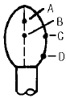
- A
- B
- C
- D
(정답률: 42%)
37. 폭발원인에 따른 분류에서 물리적 폭발에 관한 설명으로 옳은 것은?
- 산화, 분해, 중합반응 등의 화학반응에 의하여 일어나는 폭발로 촉매폭발이 이에 속한다.
- 물리적 폭발에는 열폭발, 중합폭발, 연쇄폭발 순으로 폭발력이 증가한다.
- 발열속도가 방열속도보다 켜서 반응열에 의해 반응속도가 증대되어 일어나는 폭발로 분해폭발이 이에 속한다.
- 액상 또는 고상에서 기상으로의 상변화, 온도상승이나 충격에 의해 압력이 이상적으로 상승하여 일어나는 폭발로 증기폭발이 이에 속한다.
(정답률: 37%)
38. 다음중 액체연료를 미립화시키는 방법을 설명한 것이다. 옳은 항은?
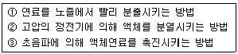
- ①
- ①, ②
- ②, ③
- ①, ②, ③
(정답률: 알수없음)
39. 오토 사이클의 열효율을 나타낸 식은? (단, η : 열효율, r : 압축비, k : 비열비)
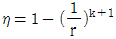
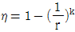
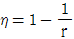
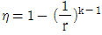
(정답률: 36%)
40. 다음은 carnot 사이클의 PV도표를 각 단계별로 설명한 것이다. 옳은 것은?
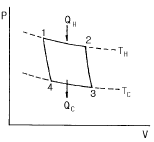
- 1 → 2는 QC의 열을 흡수하여 임의점 2까지 압축과정이다.
- 2 → 3은 온도가 TC 감소할 때까지 단열팽창과정이다.
- 3 → 4는 QC의 열을 흡수하여 원상태로 정온팽창과정이다.
- 4 → 1은 온도가 TC 로부터 TH 까지의 정온압축과정이다
(정답률: 37%)
3과목: 가스설비
41. 파라핀계 LP가스의 연소특성에 대한 설명으로 옳지 않은 것은?
- 연소범위(%)는 탄소수가 증가할수록 하한이 낮아진다
- 연소속도(m/sec)는 탄소수가 증가할수록 늦어진다.
- 발화온도는(℃)탄소수가 증가할수록 높아진다.
- 발열량(kcal/m3)은 탄소수가 증가할수록 커진다.
(정답률: 30%)
42. 아래식으로부터 중, 고압 가스 배관의 굵기를 구할 수 있는데, "S"가 의미하는 것은?
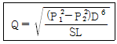
- 유량계수
- 가스비중
- 배관길이
- 관내경
(정답률: 59%)
43. 아세틸렌의 압축 시 분해폭발의 위험을 최소한 줄이기 위하여 고안된 반응장치는?
- 접촉반응장치
- I.G 반응장치
- 겔로그반응장치
- 레페반응장치
(정답률: 알수없음)
44. 1차 압력 및 부하 유량의 변동에 관계 없이 2차 압력을 일정한 압력으로 유지하는 기능의 가스공급 설비는?
- 가스홀더
- 압송기
- 정압기
- 안전장치
(정답률: 70%)
45. 구형탱크의 용적이 1000m3인 저장탱크에 비중이 0.6인 LPG를 저장할 때 저장용량은 몇 ton 인가?
- 400
- 480
- 540
- 600
(정답률: 43%)
46. 배관용 강관 중 압력배관용 탄소강관의 규격기호는?
- SPPH
- SPPS
- SPH
- SPHH
(정답률: 알수없음)
47. 발열량이 13000㎉/m3 이고, 비중이 1.3, 공급 압력이 200mmH2O 인 가스의 웨버지수는?
- 13000
- 16900
- 10000
- 11402
(정답률: 알수없음)
48. LPG 공급방식에서 강제기화방식의 특징이 아닌 것은?
- 한냉시에는 연속적인 가스공급이 어렵다.
- 설치 면적이 적게 든다.
- 기화량을 가감할 수 있다.
- 공급 가스의 조성을 일정하게 유지할 수 있다.
(정답률: 알수없음)
49. 고압밸브에 대한 설명으로 옳지 않은 것은?
- 밸브시트는 내식성과 경도가 높은 재료를 사용한다.
- 밸브는 단조품보다 주조품이 더욱 안전하다.
- 글로브 밸브는 슬루스 밸브보다 기밀도가 크다.
- 밸브의 패킹재료는 흑연, 석면, 테프론 등이 사용된다.
(정답률: 50%)
50. 정전기 제거 조치사항으로 적합하지 않은 것은?
- 본딩용 접속선 및 접지접속선의 단면적은 5.5mm2 이상인 것을 사용하여야 한다.
- 접지 저항치의 총합은 100Ω 이하로 하여야 한다.
- 저장탱크, 열교환기 등은 가능한 단독으로 되어 있어야 한다.
- 피뢰설비를 설치한 접지저항치의 총합은 50Ω 이하로 하여야 한다.
(정답률: 알수없음)
51. 공기액화분리 장치의 내부를 세척할 때 세정액으로 가장 적당한 것은?
- CO2
- CCl4
- N2
- O2
(정답률: 72%)
52. 수소의 성질 및 용기의 취급에 대한 설명으로 옳지 않은 것은?
- 용기밸브는 왼나사이며, 가능한 서서히 연다.
- 공기중에서 산소와 체적비가 2 : 1로 530℃이상에서 폭발적으로 반응하지만 할로겐원소와는 반응하지 않는다.
- 용기도색은 주황색, 가연성 가스임을 표시하는 "연" 표시와 가스 명칭은 백색으로 표기한다.
- 무계목 용기로 안전밸브는 가용전이나 파열판식을 병용한다.
(정답률: 25%)
53. 탄소강속에 소량씩 함유하고 있는 원소의 영향에 대한 설명으로 옳지 않은 것은?
- 인(P)은 상온에서 충격치가 떨어지며, 담금균열의 원인이 된다.
- 망간(Mn)은 점성을 증가시키고 고온 가공을 쉽게 한다.
- 구리(Cu)는 인장강도와 탄성한도를 높이며 내식성을 감소시킨다.
- 규소(Si)는 유동성을 좋게 하나 냉간가공성을 나쁘게 한다.
(정답률: 46%)
54. 1000rpm 으로 회전하고 있는 펌프의 회전수를 2000rpm 으로 하면 펌프의 양정과 소요동력은 각각 몇 배가 되는가?
- 펌프의 양정 : 4배, 소요 동력 : 16배
- 펌프의 양정 : 2배, 소요 동력 : 4배
- 펌프의 양정 : 4배, 소요 동력 : 2배
- 펌프의 양정 : 4배, 소요 동력 : 8배
(정답률: 알수없음)
55. 저온장치에 사용되는 진공단열법의 종류가 아닌 것은?
- 고진공 단열법
- 다층진공 단열법
- 압축진공 단열법
- 분말진공 단열법
(정답률: 15%)
56. 터보압축기에서의 서어징 방지책에 해당되지 않는 것은?
- 회전수 가감에 의한 방법
- 가이드 베인 콘트롤에 의한 방법
- 방출밸브에 의한 방법
- 클리어런스 밸브에 의한 방법
(정답률: 알수없음)
57. 일정용적의 실린더내에 기체를 흡입한 다음 흡입구를 닫아 기체를 압축하면서 다른 토출구에 압축하는 형식의 압축기는?
- 용적형
- 터보형
- 원심식
- 축류식
(정답률: 54%)
58. 정압기의 각 특성이 사용 조건에 적합하도록 선정되기 위한 평가 및 선정과 관계가 먼 특성은?
- 유량특성
- 작동최소차압
- 동특성
- 혼합특성
(정답률: 30%)
59. 정압기실(기지)에는 조작을 안전하고 확실하게 하기 위하여 조명도를 어느 정도를 유지하여야 하는가?
- 80 Lux이상
- 100 Lux이상
- 150 Lux이상
- 200 Lux이상
(정답률: 65%)
60. 아래 그림 고압조인트(joint)의 명칭은?
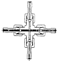
- 영구조인트
- 분해조인트
- 다방조인트
- 신축조인트
(정답률: 알수없음)
4과목: 가스안전관리
61. 액화석유가스의 이송 시 베이퍼록(Vapor-lock) 현상을 방지하기 위한 방법으로 옳은 것은?
- 흡입배관을 크게 한다.
- 토출배관을 크게 한다.
- 펌프의 회전수를 일정하게 유지시킨다.
- 펌프의 설치 위치를 높힌다.
(정답률: 42%)
62. 냉동제조시설의 기술기준에 대한 설명으로 옳지 않은 것은?
- 압축기 최종단에 설치한 안전장치는 1년에 1회 이상 점검을 실시 한다.
- 안전장치는 설계압력 이상 내압시험압력의 10분의 8이하 압력에서 작동하도록 조정을 한다.
- 압축기 최종단에 설치한 안전장치 이외의 것은 2년에 1회 이상 점검을 실시 한다.
- 안전밸브 또는 방출밸브에 설치된 스톱밸브는 항상 닫아 놓아야 한다.
(정답률: 42%)
63. 가스보일러가 가동 중인 아파트 7층 다용도실에서 세탁 중이던 주부가 세탁 30분 후 머리가 아프다며 다용도실을 나온 후 실신하였다. 정밀조사결과 상층으로 올라갈수록 CO의 농도가 높아짐을 알았다. 최우선 대책으로 추정되는 것은?
- 가스보일러 시설 개선
- 공동배기구 시설 개선
- 다용도실의 환기 개선
- 도시가스의 누출 차단
(정답률: 60%)
64. 정전기의 발생에 영향을 주는 요인에 대한 설명으로 옳지 않은 것은?
- 물질의 표면이 원활하면 발생이 적어진다.
- 물질표면이 기름 등에 의해 오염되었을 때는 산화, 부식에 의해 정전기가 크게 발생한다.
- 정전기의 발생은 처음 접촉, 분리가 일어 났을 때 최대가 된다.
- 분리속도가 빠를수록 정전기의 발생량은 적어진다.
(정답률: 73%)
65. 정압기 설치상 유의점에 대한 설명으로 가장 옳은 것은?
- 최고 1차 압력이 정압기의 설계 압력 이상이 되도록 선정한다.
- 대규모 지역의 정압기로서 사용하는 경우 정특성이 우수한 정압기을 선정한다.
- 스프링제어식의 정압기를 사용할 때에는 필요한 1차 압력 설정범위에 적합한 스프링을 사용한다.
- 사용조건에 따라 다르나, 일반적으로 최고 1차 압력의 정압기 최대용량의 70∼90% 정도의 부하가 되도록 정압기 용량을 선정한다.
(정답률: 19%)
66. 다음과 같은 설계조건으로 피크시(최고부하) 평균가스 소비량은 얼마인가?
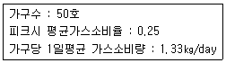
- 14.5㎏/day
- 16.6㎏/day
- 18.5㎏/day
- 20.6㎏/day
(정답률: 70%)
67. 염소(Cl2) 가스에 대한 설명으로 옳지 않은 것은?
- 수분이 함유되면 철에 대한 부식성이 강하다.
- 자극취가 강한 황녹색의 가스로서 공기보다 가볍다.
- 가스 누출시에는 소석회 등으로 중화시키면 좋다.
- 묽은 알칼리용액과 반응하여 하이포염소산이 되며 표백에 이용된다.
(정답률: 알수없음)
68. 다음 빈칸에 적절한 값은?
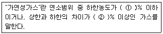
- ① = 20, ② = 10
- ① = 10, ② = 20
- ① = 30, ② = 10
- ① = 20, ② = 30
(정답률: 알수없음)
69. 일산화탄소의 성질 및 중독 증상에 대한 설명으로 옳은 것은?
- 코를 강하게 자극하는 냄새가 난다.
- 폭발범위가 8.4∼57.5% 인 가연성 가스이다.
- 공기 중의 농도 0.32% 일 때, 20분 경과 후 두통, 현기증, 메스꺼움을 느낀다.
- 헤모글로빈과의 결합력이 산소의 약 250배 정도이다.
(정답률: 55%)
70. 도시가스 공급시설인 지역정압기의 안전장치 중 설정압력이 가장 높은 것은?
- 이상압력통보설비
- 주정압기에 설치하는 긴급차단장치
- 예비정압기에 설치하는 긴급차단장치
- 안전밸브
(정답률: 20%)
71. 가스의 용어에 대한 설명으로 옳은 것은?
- 트리메틸아민은 가연성가스이지만 독성가스는 아니다.
- 허용농도가 백만분의 500 이하인 가스를 독성가스로 분류한다.
- 가압, 냉각 등의 방법에 의하여 액체상태로 되어 있는 것으로서 대기압에서의 비점이 섭씨 40도 이하 또는 상용의 온도 이하인 것을 가연성가스라 한다.
- 산소, 질소 등과 같이 기체상태로 압축되어 취급되는 가스를 압축가스라 한다.
(정답률: 82%)
72. 차량에 고정된 소형저장탱크에 액화석유가스를 충전할 때의 기준으로 옳지 않은 것은?
- 소형저장탱크의 검사여부를 확인하고 공급할 것
- 소형저장탱크내의 잔량을 확인한 후 충전할 것
- 충전작업은 수요자가 채용한 경험이 많은 사람의 입회하에 할 것
- 작업중의 위해방지를 위한 조치를 할 것
(정답률: 55%)
73. 가스가 누출될 경우 쉽게 알 수 있도록 도시가스에 첨가하는 부취제의 조건으로 옳지 않은 것은?
- 독성이 없어야 한다.
- 부식성이 없어야 한다.
- 토양에 대한 투과성이 좋아야 한다.
- 물에 잘 녹아야 한다.
(정답률: 알수없음)
74. 독성가스배관 중 2중관으로 하여야 하는 독성가스가 아닌것은?
- 포스겐
- 염소
- 브롬화메탄
- 염화메탄
(정답률: 알수없음)
75. 가스제조시설 등에 설치하는 플레어스택에 대한 설명으로 옳지 않은 것은?
- 연소능력은 긴급이송설비에 의하여 이송되는 가스를 안전하게 연소시킬 수 있는 것일 것
- 복사열이 다른 가스공급시설에 나쁜 영향을 미치지 아니하도록 안전한 높이 및 위치에 설치할 것
- 방출된 가스가 지상에서 폭발한계에 도달하지 아니하도록 한 것일 것
- 파이롯트 버너는 항상 점화하여 둘 것
(정답률: 알수없음)
76. 가연성가스와 산소를 동일차량에 적재하여 운반할 때는 어떻게 하여야 하는가?
- 보호망을 씌운다.
- 용기사이에 패킹을 한다.
- 충전용기의 밸브가 서로 마주보지 않도록 적재한다.
- 함께 운반해서는 안된다.
(정답률: 알수없음)
77. 액화석유가스 저장시설을 수리하기 위하여 수리원이 탱크 내로 들어갈 때 탱크내의 산소 농도는 최소 몇 [%] 이상이어야 하는가?
- 5 %
- 13 %
- 18 %
- 22 %
(정답률: 알수없음)
78. 아세틸렌을 용기에 충전할 때에는 미리 용기에 다공질물을 채워야 하는데, 이 때 다공질물의 다공도 상한값은?
- 72%
- 85%
- 92%
- 98%
(정답률: 알수없음)
79. 가스용품 중 배관용 밸브 제조 시 기술기준으로 옳지 않은 것은?
- 각 부분은 개폐동작이 원활히 작동하고 O-링과 패킹 등에 마모 등 이상이 없는 것일 것
- 배관용 밸브의 핸들을 고정시키는 너트의 재료는 내식성 재료 또는 표면에 내식처리를 한 것일 것
- 개폐용 핸드휠은 열림 방향이 시계 방향일 것
- 볼밸브는 완전히 열렸을 때 핸들 방향과 유로 방향이 평행일 것
(정답률: 알수없음)
80. 도시가스 배관을 지하에 매설하는 경우 배관은 그 외면으로부터 지하의 다른 시설물과 얼마 이상 유지하여야 하는 가?
- 1.5m 이상
- 0.7m 이상
- 0.5m 이상
- 0.3m 이상
(정답률: 알수없음)
5과목: 가스계측기기
81. 고온고압의 액체나 부식성액체 탱크에 적합한 간접식 액면계는?
- 유리관식
- 방사선식
- 플로트식
- 검척식
(정답률: 알수없음)
82. 가스크로마토그래피 검출기에 대한 설명으로 옳지 않은 것은?
- 열전도형 검출기(TCD)의 운반가스는 주로 순도 99.8% 이상의 질소나 아르곤가스를 사용한다.
- 열전도형 검출기(TCD)는 유기 및 무기화학종 모두에 감응한다.
- 수소이온화 검출기(FID)는 탄화수소에 대한 감응이 좋다.
- 전자포획 이온화 검출기(ECD)는 할로겐 및 산소화합물에서의 감응이 좋다.
(정답률: 28%)
83. 통풍건습구 습도계로 대기 중의 습도를 측정했다. 건구온도가 20℃, 습구온도가 15℃, 대기압이 760mmHg 일 때의 절대습도는? (단, 20℃, 15℃의 물의 포화수증기압은 각각 17.53, 12.78 mmHg이다.)
- 7.8g/m3
- 8.4g/m3
- 13.6g/m3
- 10.1g/m3
(정답률: 알수없음)
84. 측정압력이 아주 높고 정도가 좋아 부르동관식 압력계의 눈금 교정 및 연구실용으로 주로 쓰이는 압력계는?
- 침종식 압력계
- 다이어프램 압력계
- 피스톤식 압력계
- 벨로우즈식 압력계
(정답률: 알수없음)
85. 잔류편차(offset)가 없고 응답상태가 좋은 조절동작을 위하여 주로 사용되는 제어기는?
- P제어기
- PI제어기
- PD제어기
- PID제어기
(정답률: 알수없음)
86. 다음 중 액주형 압력계에 속하지 않는 것은
- U자관 압력계
- 링밸런스식 압력계
- 경사관 압력계
- 부르동관 압력계
(정답률: 67%)
87. 가스의 폭발 등 급속한 압력변화를 측정하거나 엔진의 지시계로 사용하는 압력계는?
- 피에조 전기압력계
- 경사관식 압력계
- 침종식 압력계
- 벨로즈식 압력계
(정답률: 85%)
88. 부르동관 압력계로 측정한 압력이 10kg/cm2 이었다. 부유피스톤식 압력계의 실린더 지름이 6cm, 피스톤의 지름이 2cm 일 때 추와 피스톤의 무게는?
- 22.6kg
- 31.4kg
- 27.1kg
- 35.8kg
(정답률: 72%)
89. 가스미터의 출구측 배관에 입상배관을 피하여 설치하는 가장 주된 이유는?
- 설치 면적을 줄일 수 있다.
- 검침 및 수리 등의 작업이 편리하다.
- 배관의 길이를 줄일 수 있다.
- 가스미터 내 밸브 등이 동결될 우려가 있다.
(정답률: 36%)
90. 방재선으로 캐리어가스가 이온화 되어 생긴 자유전자를 시료 성분을 포획하면 이온전류가 멸소하는 원리를 이용한 가스 검출기는?
- TCD
- FID
- 검지관
- ECD
(정답률: 알수없음)
91. 가스미터 특성에 대한 설명으로 옳지 않은 것은?
- 습식 가스미터는 가스발열량 측정에도 이용된다.
- 막식 가스미터는 저렴하고 유지관리가 용이하다.
- 루트 미터의 용량 범위는 막식 가스미터보다 크다.
- 습식가스미터의 설치 공간은 루트미터 보다 적다.
(정답률: 알수없음)
92. 게겔(Gockel)법을 이용하여 가스를 흡수 분리할 때 33% KOH 로 분리되는 가스는?
- 이산화탄소
- 에틸렌
- 아세틸렌
- 일산화탄소
(정답률: 알수없음)
93. 철 - constantan 열전대에서 기준접점이 0℃ 이고 측온접점이 20℃ 및 200℃ 일 때의 열기전력이 각각 1.03 mV 및 10.87 mV 이다. 이 열전대가 기준접점 20℃, 측온접점 200℃ 에 있을 때의 열기전력은?
- 3.10 mV
- 10.55 mV
- 9.84 mV
- 11.90 mV
(정답률: 알수없음)
94. 다음에서 계측기 측정의 특징에 대한 설명으로 옳은 것으로만 나열된 것은?(오류 신고가 접수된 문제입니다. 반드시 정답과 해설을 확인하시기 바랍니다.)
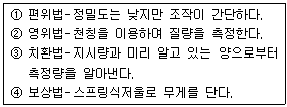
- ①, ②
- ①, ③, ④
- ②, ③
- ①, ②, ③
(정답률: 알수없음)
95. 피토관(pitot tube)는 어떤 압력차이를 측정하여 유량을 측정하는가?
- 정압과 동압차
- 전압과 정압차
- 대기압과 동압차
- 전압과 동압차
(정답률: 알수없음)
96. 1차 제어장치가 제어량을 측정하고 2차 조절계의 목표값을 설정하는 것으로, 외란의 영향이나 낭비시간 지연이 큰 프로세서에 적용되는 제어방식은?
- 정치제어
- 캐스케이드제어
- 추치제어
- 비율제어
(정답률: 50%)
97. 가스누출 검지관법에 대한 설명으로 옳지 않은 것은?
- 검지관은 내경 2~4㎜ 의 유리관에 발색시약을 흡착시킨 검지제를 충전한다.
- 사용할 때 반드시 한쪽만 절단하여 측정한다.
- 국지적인 가스누출 검지에 사용된다.
- 염소에 대한 측정농도 범위는 0∼0.004% 정도이고, 검지한도는 0.1ppm 이다.
(정답률: 알수없음)
98. 추량식 가스미터에 해당되지 않는 것은?
- 벤투리 미터
- 오리피스 미터
- 로터리 피스톤식 미터
- 델타형 미터
(정답률: 24%)
99. 내부 드럼 회전수를 적산하여 기체의 체적유량을 구하는 방식으로서 정확한 계량이 가능하여 다른 가스미터의 기준기로 이용되는 가스미터는?
- 벤투리미터
- 터빈가스미터
- 습식가스미터
- 루츠미터
(정답률: 알수없음)
100. 가스 정량분석을 통해 표준상태의 체적을 구하는 식은? (단, Vo : 표준상태의 체적, V : 측정시의 가스의 체적, P : 대기압, P' : t [℃]의 증기압)
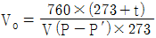
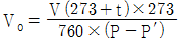
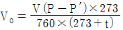
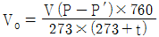
(정답률: 알수없음)
해설: 뉴턴 유체는 전단응력이 속도구배에 비례하는 것이 아니라, 일정한 값으로 유지되는 유체를 말합니다. 따라서 이상유체와 뉴턴유체의 구분은 점성의 유무에 따라 이루어집니다. 동점성계수는 절대점도와 유체압력의 비를 나타내는 값입니다.